Cinema Player operator manual Cinema Player Bedienungsanleitung
Cinema Player plays a cinema program on a dedicated projector output while the projectionist works on a separate control screen. The big screen shows only the picture — never menus, clocks, or subtitles unless you choose a subtitle track.
Cinema Player spielt ein Kinoprogramm auf einem eigenen Beamerausgang, während die Vorführung an einem separaten Kontrollbildschirm bedient wird. Die große Leinwand zeigt nur das Bild — keine Menüs, Uhren oder Untertitel, außer Sie wählen eine Untertitelspur.
1. Start and screens 1. Start und Bildschirme
Connect two outputs from the graphics card: one for the control monitor, one for the projector (HDMI, DVI, or DisplayPort). From the project folder run ./start or pixi run start. The desktop file Cinema-Player.desktop starts the same script.
Schließen Sie zwei Ausgänge der Grafikkarte an: einen für den Kontrollmonitor, einen für den Beamer (HDMI, DVI oder DisplayPort). Im Projektordner starten Sie mit ./start oder pixi run start. Die Datei Cinema-Player.desktop startet dasselbe Skript.
If only one display is found, a warning asks you to attach a second output and select it under Beamer output. The projector instance of mpv uses that connector. Preview audio can stay on the control machine; program audio goes out with the projector HDMI.
Wird nur ein Bildschirm gefunden, warnt Cinema Player und bittet, einen zweiten Ausgang anzuschließen und unter Beamerausgang zu wählen. Die mpv-Instanz für den Beamer nutzt diesen Anschluss. Vorschau-Ton kann am Kontrollrechner bleiben; der Programmton geht mit dem HDMI des Beamers.
2. Control window 2. Kontrollfenster
The header shows the logo, the version, and the settings menu (three lines, top right). Below that the window is split: program and playlist on the left, beamer and preview on the right.
Die Kopfzeile zeigt das Logo, die Version und das Einstellungsmenü (drei Striche oben rechts). Darunter ist das Fenster geteilt: Programm und Playlist links, Beamer und Vorschau rechts.
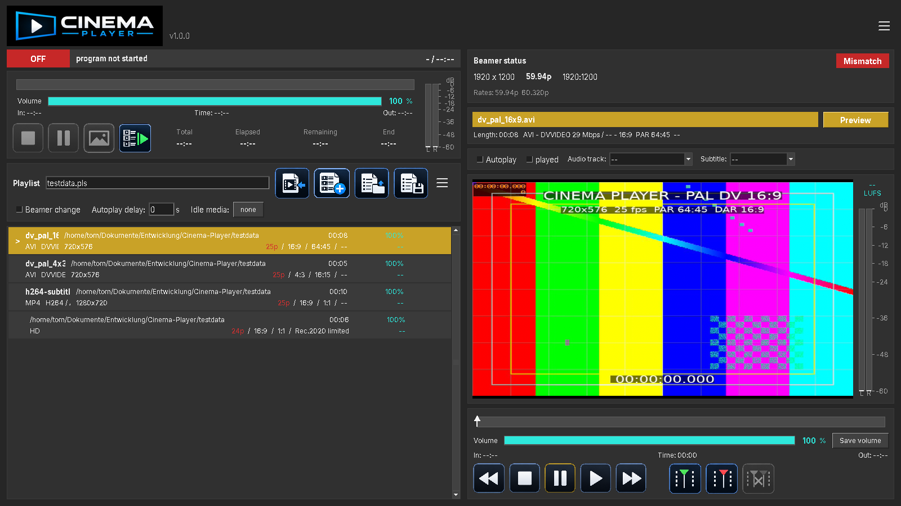
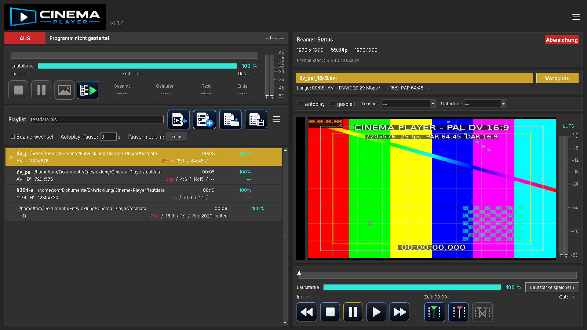
- Status bar — program state, clip name, playlist position.
- Statuszeile — Programmzustand, Clipname, Position in der Playlist.
- Program block — progress, volume, In/Out, transport, four clocks, VU meter.
- Programmblock — Verlauf, Lautstärke, In/Out, Transport, vier Uhren, VU-Meter.
- Playlist tools — name, import / new / load / save, beamer change, autoplay delay, idle media.
- Playlist-Werkzeuge — Name, Import / Neu / Laden / Speichern, Beamerwechsel, Autoplay-Pause, Pausenmedium.
- Playlist — the running order.
- Playlist — die Spielfolge.
- Beamer status — resolution, refresh, available rates, OK or Mismatch.
- Beamer-Status — Auflösung, Frequenz, verfügbare Raten, OK oder Abweichung.
- Preview — Live/Preview badge, metadata, clip settings, picture, meters, transport, In/Out.
- Vorschau — Live/Vorschau, Metadaten, Clip-Einstellungen, Bild, Meter, Transport, In/Out.
Fullscreen on the control monitor: F11 or Settings → Fullscreen. It never covers the projector output.
Vollbild auf dem Kontrollmonitor: F11 oder Einstellungen → Vollbildmodus. Der Beamerausgang wird davon nicht überdeckt.
3. Settings 3. Einstellungen
Open the burger menu at the top right of the header.
Öffnen Sie das Burger-Menü oben rechts in der Kopfzeile.
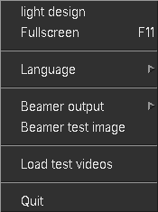
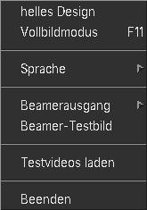
- Light / dark design — colours of the control window.
- Helles / dunkles Design — Farben des Kontrollfensters.
- Fullscreen — control monitor only (F11).
- Vollbildmodus — nur Kontrollmonitor (F11).
- Language — English or Deutsch. The brand name Cinema Player stays untranslated.
- Sprache — English oder Deutsch. Der Name Cinema Player bleibt unübersetzt.
- Beamer output — which connector is the projector. Locked while PLAYING.
- Beamerausgang — welcher Anschluss der Beamer ist. Während WIEDERGABE gesperrt.
- Beamer test image — Cinema Player logo on the projector until you close the dialog. Only in OFF.
- Beamer-Testbild — Cinema-Player-Logo auf dem Beamer, bis der Dialog geschlossen wird. Nur bei AUS.
- Load test videos — replaces the playlist with files from
testdata. - Testvideos laden — ersetzt die Playlist durch die Dateien in
testdata. - Quit — only enabled in OFF.
- Beenden — nur bei AUS aktiv.
4. Program states and transport 4. Programmzustände und Transport
A show has three states. Start only arms the program. Resume rolls the clip. Idle media (if set) appears only in PROGRAM, never in OFF.
Eine Vorstellung hat drei Zustände. Start schaltet das Programm nur scharf. Weiter startet den Clip. Ein Pausenmedium erscheint nur im Zustand PROGRAMM, niemals bei AUS.
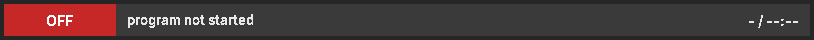
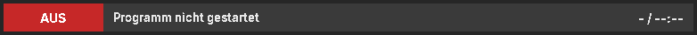
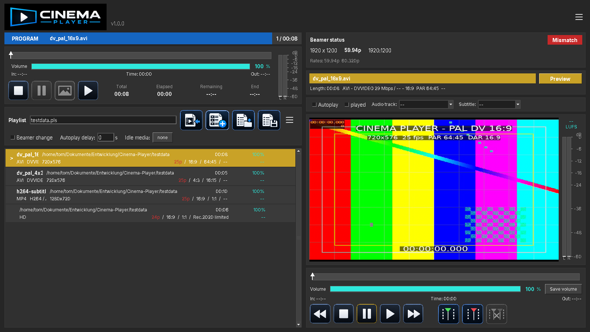
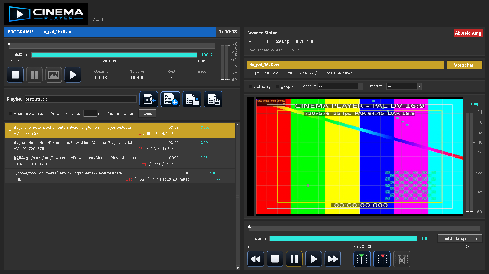
| Button | Taste | Action | Wirkung | |
|---|---|---|---|---|
| Start | Start | OFF → PROGRAM. Does not start the file. | AUS → PROGRAMM. Startet die Datei nicht. | |
| Resume | Weiter | Roll the current clip, unpause, or leave still. | Aktuellen Clip starten, Pause aufheben oder Standbild verlassen. | |
| Pause | Pause | Hold position; projector goes black. Confirm first. | Position halten; Beamer wird schwarz. Zuerst bestätigen. | |
| Still | Standbild | Freeze the current frame on the projector. Confirm first. | Aktuelles Bild auf dem Beamer einfrieren. Zuerst bestätigen. | |
| Stop | Stop | While PLAYING: end the clip → PROGRAM. Again: end the program → OFF. | Bei WIEDERGABE: Clip beenden → PROGRAMM. Nochmals: Programm beenden → AUS. |
Buttons that cannot be used are shown with a disabled icon (grey) and an arrow cursor. Pause and Still only work while PLAYING. Stop is dead in OFF.
Tasten, die nicht gelten, erscheinen als graues Disabled-Symbol mit Pfeilcursor. Pause und Standbild nur bei WIEDERGABE. Stop ist bei AUS tot.
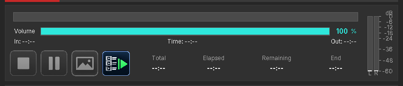
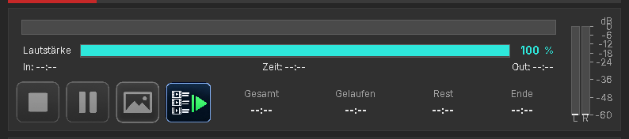
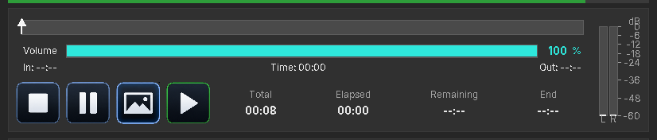
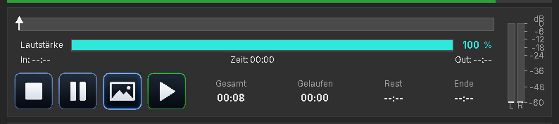
The four clocks are Total, Elapsed, Remaining, and End (wall-clock time when the clip will finish).
Die vier Uhren sind Gesamt, Gelaufen, Rest und Ende (Uhrzeit, zu der der Clip endet).
Autoplay on a clip starts the next file after the autoplay delay (black). Idle media is not shown in that gap. After the last clip the program stays in PROGRAM until you Stop.
Autoplay an einem Clip startet die nächste Datei nach der Autoplay-Pause (schwarz). In dieser Lücke erscheint kein Pausenmedium. Nach dem letzten Clip bleibt das Programm auf PROGRAMM, bis Sie Stoppen.
5. Playlist 5. Playlist
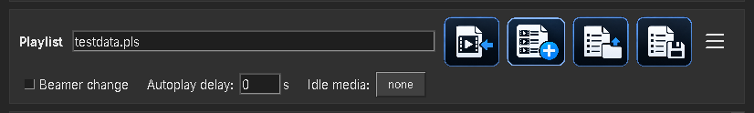
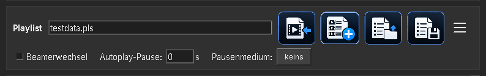
| Tool | Funktion | |
|---|---|---|
| Import files or a folder into the list. | Dateien oder einen Ordner in die Liste übernehmen. | |
| New playlist (asks before clearing). | Neue Playlist (fragt vor dem Leeren). | |
Load a .pls playlist. |
Eine .pls-Playlist laden. |
|
| Save the current list and settings. | Aktuelle Liste und Einstellungen speichern. |
Drag a row to reorder. A left cursor marks the program pointer. Played clips go grey. Missing files stay in the list, show a missing badge, and are skipped during the show. Red metadata (frame rate, aspect, PAR, colorspace) means a beamer change or refresh mismatch — confirm the popup before Resume.
Ziehen Sie eine Zeile, um die Reihenfolge zu ändern. Ein Cursor links markiert den Programmzeiger. Gespielte Clips werden grau. Fehlende Dateien bleiben in der Liste, tragen ein FEHLT-Zeichen und werden in der Vorstellung übersprungen. Rote Metadaten (Bildrate, Bildformat, PAR, Farbraum) bedeuten Beamerwechsel oder Frequenzabweichung — den Dialog bestätigen, bevor Sie Weiter drücken.
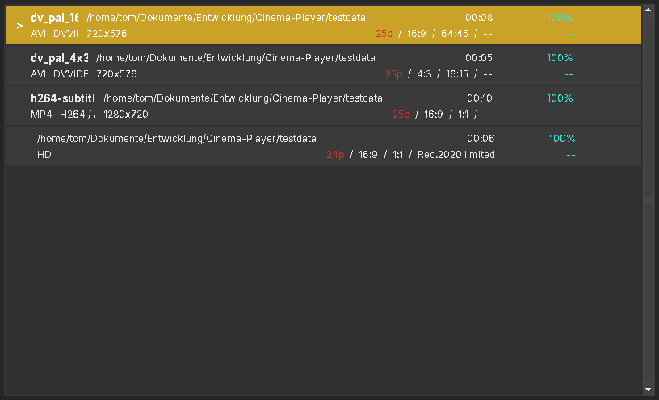
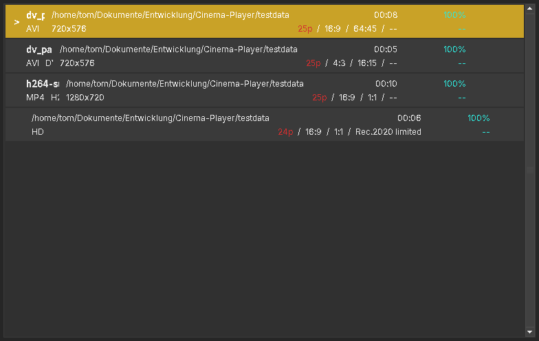
Right-click a row:
Rechtsklick auf eine Zeile:
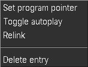
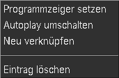
Changing the program pointer while not playing must be confirmed, so the running order cannot jump by accident.
Ein Wechsel des Programmzeigers außerhalb der Wiedergabe muss bestätigt werden, damit die Reihenfolge nicht versehentlich springt.
The playlist burger menu:
Das Playlist-Burger-Menü:
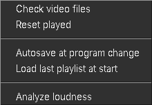
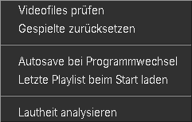
- Beamer change — popup when aspect, PAR, or colorspace needs a projector zoom/lens change. 16:9 in 21:9 zoom is letterboxed to height.
- Beamerwechsel — Dialog, wenn Bildformat, PAR oder Farbraum eine Zoom-/Objektivänderung brauchen. 16:9 im 21:9-Zoom wird auf die Höhe eingepasst.
- Autoplay delay — seconds of black before the next autoplay clip, and before idle media appears after a clip.
- Autoplay-Pause — Sekunden Schwarz vor dem nächsten Autoplay-Clip und bevor das Pausenmedium erscheint.
- Idle media — loop on the projector only while PROGRAM is armed. The button turns green while that media is on screen.
- Pausenmedium — Schleife auf dem Beamer nur bei scharfem PROGRAMM. Die Taste wird grün, solange das Medium auf der Leinwand ist.
6. Preview and In/Out 6. Vorschau und In/Out
Click a playlist row to load it in preview (yellow Preview). Click the badge to follow the program output () when a clip is on air. In/Out cannot be edited while that clip is on air.
Ein Klick auf eine Playlist-Zeile lädt sie in die Vorschau (gelb Vorschau). Ein Klick auf das Abzeichen folgt der Programmausgabe (), wenn ein Clip läuft. In/Out lassen sich nicht ändern, solange dieser Clip auf Sendung ist.
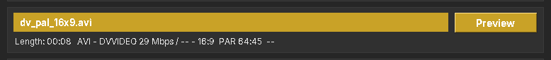
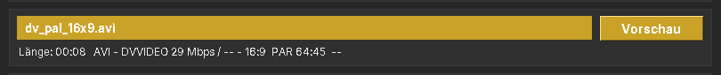
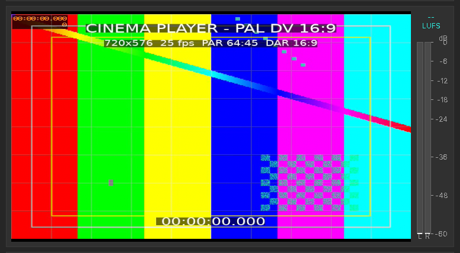
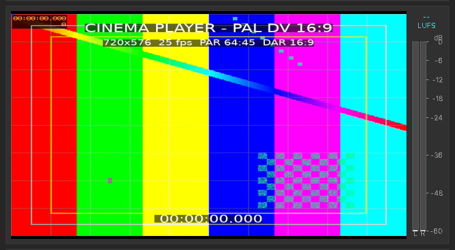
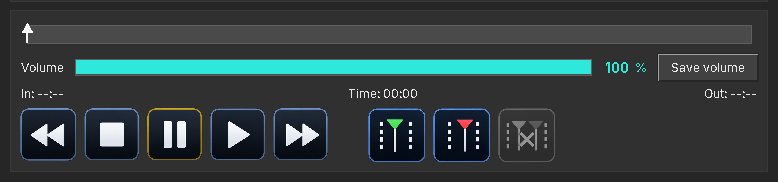
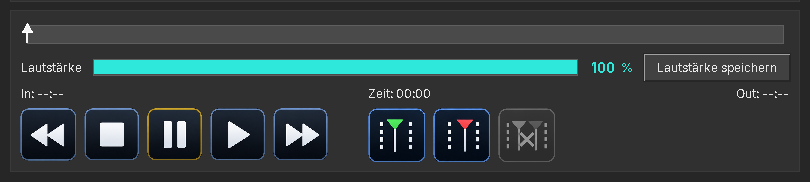
Per clip you can set autoplay, played, audio track, and subtitle track (off unless you pick one). Program playback uses the In and Out marks. The program progress bar and clocks always follow those marks, even if idle media is looping on the projector.
Pro Clip lassen sich Autoplay, Gespielt, Tonspur und Untertitel (aus, bis eine Spur gewählt wird) setzen. Die Programmwiedergabe nutzt die In- und Out-Marken. Verlauf und Uhren im Programm folgen immer diesen Marken, auch wenn auf dem Beamer ein Pausenmedium läuft.
7. Beamer 7. Beamer
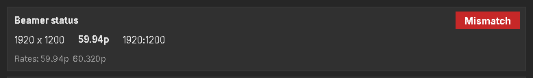
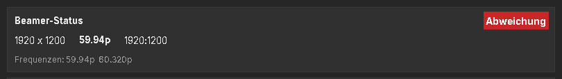
Before a clip rolls, Cinema Player picks a display mode at the native resolution whose refresh matches the frame rate or an integer multiple. If the projector has no such mode, a custom xrandr mode can be created at playback time. Import and probe never create modes. Test files in testdata often show Mismatch on a 60 Hz office monitor — that is expected.
Bevor ein Clip läuft, wählt Cinema Player einen Anzeigemodus in nativer Auflösung, dessen Frequenz zur Bildrate oder einem ganzzahligen Vielfachen passt. Fehlt ein solcher Modus, kann zur Wiedergabe ein eigener xrandr-Modus erzeugt werden. Import und Analyse erzeugen keine Modi. Testdateien in testdata zeigen an einem 60-Hz-Büromonitor oft Abweichung — das ist erwartet.
8. Volume and loudness 8. Lautstärke und Lautheit
Each clip has its own volume. Adjust it in preview and press Save volume. The program fader follows the clip that is on air. Program and preview each have a VU meter (separate audio filters).
Jeder Clip hat eine eigene Lautstärke. Stellen Sie sie in der Vorschau und drücken Sie Lautstärke speichern. Der Programmregler folgt dem Clip auf Sendung. Programm und Vorschau haben je ein VU-Meter (getrennte Audiofilter).
Analyze loudness (playlist menu, only in OFF) runs ffmpeg EBU R128 on every video. Integrated LUFS is stored on the entry and shown in the playlist row and above the preview meter. This can take a while.
Lautheit analysieren (Playlist-Menü, nur bei AUS) misst mit ffmpeg EBU R128 jedes Video. Die integrierte LUFS-Zahl steht in der Playlist-Zeile und über dem Vorschaumeter. Das kann dauern.
9. Still images 9. Standbilder
Images can sit in the playlist. Set a display time in seconds. After that time the program stops or autoplays the next item. Display time 0 keeps the still until Resume. Preview transport is hidden for stills. If a still is followed by a video, the output refresh is set to the video frame rate first, so the projector does not renegotiate when the video starts.
Bilder können in der Playlist stehen. Die Anzeigezeit in Sekunden festlegen. Danach stoppt das Programm oder startet den nächsten Eintrag per Autoplay. Anzeigezeit 0 hält das Bild bis Weiter. Der Vorschau-Transport ist bei Standbildern ausgeblendet. Folgt auf ein Bild ein Video, wird die Ausgangsfrequenz zuerst auf die Videobildrate gesetzt, damit der Beamer beim Videostart nicht neu verhandelt.
10. Quit 10. Beenden
Quit, the window close box, and Ctrl+F4 only work in OFF. If the program is armed or playing, Cinema Player asks you to Stop first so the booth cannot drop a live show by closing the window.
Beenden, das Schließen des Fensters und Strg+F4 gelten nur bei AUS. Ist das Programm scharf oder in Wiedergabe, verlangt Cinema Player zuerst Stop — damit die Vorstellung nicht durch Schließen des Fensters abbricht.